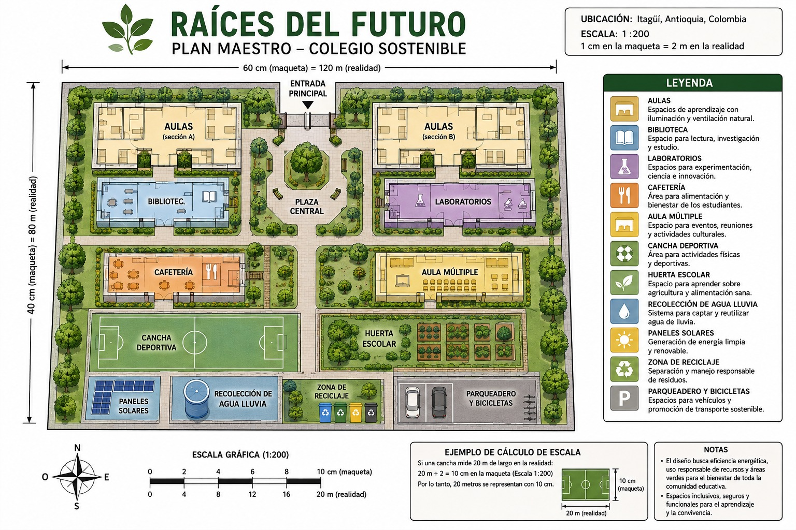
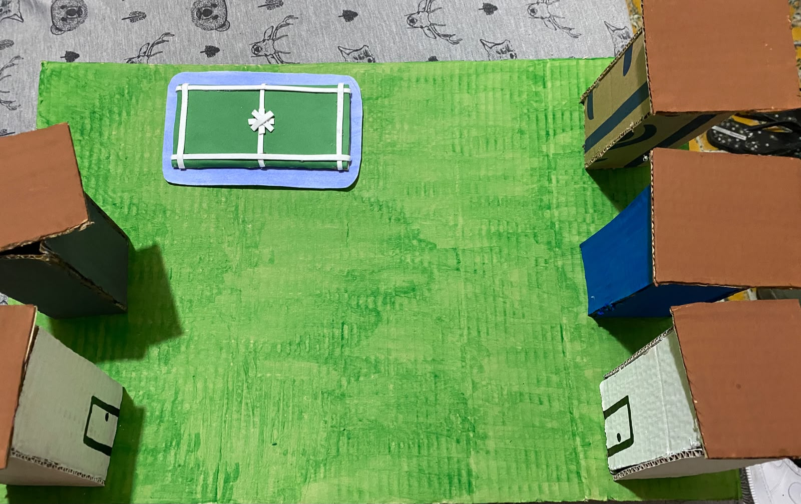

PROYECTO DE COLEGIO SOSTENIBLE
Una propuesta educativa sostenible ubicada en Itagüí, Antioquia, que busca mejorar la calidad de vida de los estudiantes y promover el uso responsable de los recursos naturales.
Conoce nuestro colegioRaíces del Futuro estará ubicado en Itagüí, Antioquia, Colombia.
El proyecto busca crear un espacio educativo sostenible dentro de un contexto urbano, incorporando zonas verdes, sistemas de ahorro de recursos y espacios para la educación ambiental.
Nuestra misión es brindar una educación de calidad en un ambiente seguro, inclusivo y sostenible.
Buscamos formar estudiantes responsables, creativos, solidarios y comprometidos con su comunidad y con el medio ambiente.
Nuestra visión es convertir a Raíces del Futuro en un modelo de colegio sostenible que combine educación, tecnología, innovación y responsabilidad ambiental.
El Plan Maestro organiza los diferentes espacios de Raíces del Futuro buscando que el colegio sea funcional, inclusivo, cómodo y sostenible.

Plano del Plan Maestro de Raíces del Futuro.

Avance de la maqueta física de Raíces del Futuro.
Espacios de aprendizaje con iluminación natural, ventilación adecuada y uso responsable de recursos.
Espacio destinado a la lectura, investigación y aprendizaje.
Espacios para desarrollar experimentos, investigación científica e innovación.
Espacio para la alimentación y el bienestar de los estudiantes.
Espacios para practicar deportes y promover hábitos saludables.
Jardines y espacios naturales para recreación, descanso y educación ambiental.
Espacio para aprender sobre agricultura, alimentación y cuidado del ambiente.
Lugar destinado a la separación y manejo responsable de los residuos.
Para nuestra propuesta utilizaremos inicialmente una escala de:
Esto significa que 1 cm en la maqueta representa 200 cm en la realidad.
Si un aula mide 8 metros de largo y queremos representarla utilizando una escala 1:200:
Por lo tanto, un aula de 8 metros se representaría con una longitud de 4 cm en la maqueta.
Raíces del Futuro fue diseñado como un colegio enfocado en la educación de calidad, la inclusión y la sostenibilidad.
La distribución de los espacios busca crear un ambiente seguro y funcional donde los estudiantes puedan aprender, convivir y desarrollar diferentes habilidades.
Las zonas verdes, la huerta escolar, el sistema de recolección de agua lluvia, los paneles solares y la zona de reciclaje permiten que la sostenibilidad forme parte de la vida diaria del colegio.
Nuestro colegio incorpora soluciones sostenibles para reducir el uso de recursos naturales y proteger el medio ambiente.
Raíces del Futuro recolectará agua lluvia mediante un sistema de captación.
El colegio utilizará paneles solares como fuente de energía renovable.
El colegio contará con estaciones de reciclaje para papel, plástico, vidrio y residuos orgánicos.
Raíces del Futuro promoverá el uso responsable del agua, la energía y los materiales.
Gerente/coordinadora del proyecto: organiza tiempos, tareas y registra las decisiones del equipo.
Líder de diseño e innovación: diseña la propuesta visual y participa en el desarrollo del proyecto.
Líder de sostenibilidad e innovación: investiga soluciones sostenibles para el colegio.
Analista de matemáticas y datos: realiza cálculos, organiza datos, escalas, presupuestos y análisis.
Raíces del Futuro nace con el propósito de crear un colegio sostenible, inclusivo e innovador en Itagüí, Antioquia.
Nuestras raíces representan nuestros valores, nuestra comunidad y el compromiso de construir un futuro mejor para las nuevas generaciones.
Nuestro reto es diseñar un colegio sostenible, innovador e inclusivo que responda a las necesidades de los estudiantes y del medio ambiente.
Queremos aprovechar responsablemente el agua y la energía, reducir los residuos, aumentar las zonas verdes y crear espacios que favorezcan el aprendizaje, la convivencia y el bienestar.